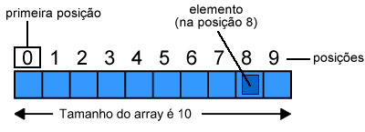
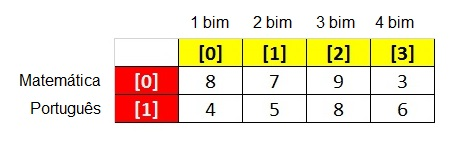

Array ou Vetor é uma estrutura de dados indexada que otimiza o uso de variáveis.
Simplificando: Array ou Vetor pode ser entendido como uma forma especial de trabalhar com as variáveis.
Array Multidimensional ou Matriz é um Array de Array.
Um array de duas dimensões por exemplo forma uma tabela. No exemplo abaixo vamos criar um array multidimensional para armazenar as notas bimestrais de matemática e português de um determinado aluno.
